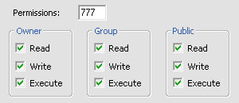

Step 2 - Set the file rights (chmod)
For detailed information on how to set the rights of your files, please take a look at the manual of your prefered ftp client.
After doing the Step 1, you got to set the rights of all uploaded files to the following:
If you host the stat on a Microsoft Windows server, you do not need to change any rights. So you can go to the next step directly.
The folder BACKUP, LOG and the subfolder ARCHIVE & GEOIP has to have the right to write into.
- drwxrwxrwx (chmod 777)/backup
- drwxrwxrwx (chmod 777)/func/geoip
- drwxrwxrwx (chmod 777)/log
- drwxrwxrwx (chmod 777)/log/archive
The files "config.php", "config_db.php", "pattern_site_name.inc", "pattern_string_replace.inc" and "tracking_code.php" in folder CONFIG need the 666 rights.
- -rw-rw-rw- (chmod 666)config/config.php
- -rw-rw-rw- (chmod 666)config/config_db.php
- -rw-rw-rw- (chmod 666)config/pattern_site_name.inc
- -rw-rw-rw- (chmod 666)config/pattern_string_replace.inc
- -rw-rw-rw- (chmod 666)config/tracking_code.php
- -rw-rw-rw- (chmod 666)config/tracking_code_xhtml.php
The files "print.css" and "style.css" in the CSS folder need the 666 rights
- -rw-rw-rw- (chmod 666)css/print.css
- -rw-rw-rw- (chmod 666)css/style.css
Set the file permissions of all files in folder func/geoip/* to 666.
- -rw-rw-rw- (chmod 666)func/geoip/LocationIP.bin
- -rw-rw-rw- (chmod 666)func/geoip/LocationIPv6.bin
- -rw-rw-rw- (chmod 666)func/geoip/LocationIPversion.dat
All files in the LOG folder need the 666 rights
- -rw-rw-rw- (chmod 666)log/.htaccess
- -rw-rw-rw- (chmod 666)log/cache_memory_address.php
- -rw-rw-rw- (chmod 666)log/cache_time_stamp.php
- -rw-rw-rw- (chmod 666)log/cache_time_stamp_archive.php
- -rw-rw-rw- (chmod 666)log/cache_visitors.php
- -rw-rw-rw- (chmod 666)log/cache_visitors_archive.php
- -rw-rw-rw- (chmod 666)log/cache_visitors_counter.php
- -rw-rw-rw- (chmod 666)log/index_days.php
- -rw-rw-rw- (chmod 666)log/last_logins.dta
- -rw-rw-rw- (chmod 666)log/last_timestamp.dta
- -rw-rw-rw- (chmod 666)log/logdb.dta
- -rw-rw-rw- (chmod 666)log/logdb_backup.dta
- -rw-rw-rw- (chmod 666)log/logdb_temp.dta
- -rw-rw-rw- (chmod 666)log/pattern_browser.dta
- -rw-rw-rw- (chmod 666)log/pattern_operating_system.dta
- -rw-rw-rw- (chmod 666)log/pattern_referer.dta
- -rw-rw-rw- (chmod 666)log/pattern_resolution.dta
- -rw-rw-rw- (chmod 666)log/pattern_site_name.dta
- -rw-rw-rw- (chmod 666)log/timestamp_cache_update.dta
Within the folder THEMES the files "counter.css" and "style.css" need the rights 666.
- -rw-rw-rw- (chmod 666)themes/ * /counter.css
- -rw-rw-rw- (chmod 666)themes/ * /style.css